Cafeteria em Gruta de Lourdes · Maceió
Brownie, cookie e café pra fazer você querer ficar.
Uma cafeteria aconchegante em Gruta de Lourdes, Maceió, com doces irresistíveis e um café pra deixar seu momento ainda melhor.
- 5,0 no Google
- 📍 Gruta de Lourdes
- ☕ Café • Brownie • Cookie
- 🕐 17h às 22h
Por que a Brookies
Feito pra virar seu programa da tarde
-
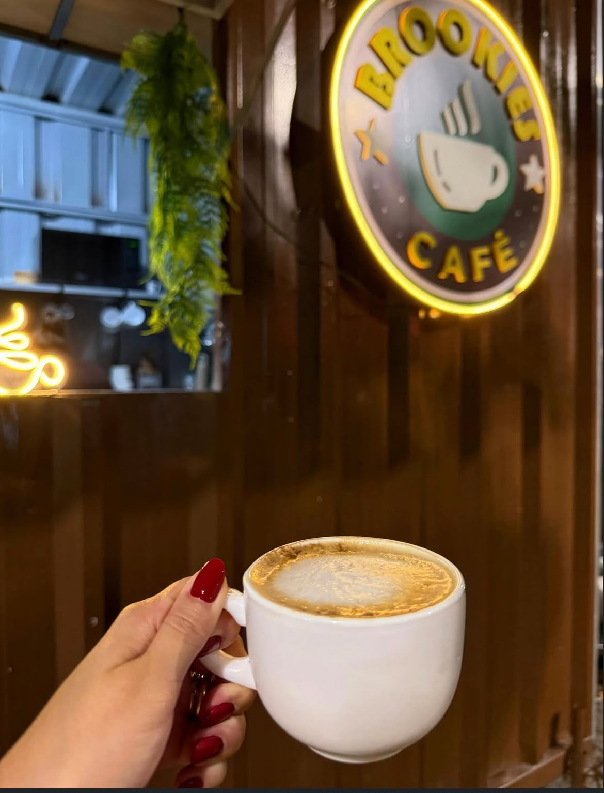
Café fresquinho
Coado na hora pra acompanhar o doce e a conversa.
-
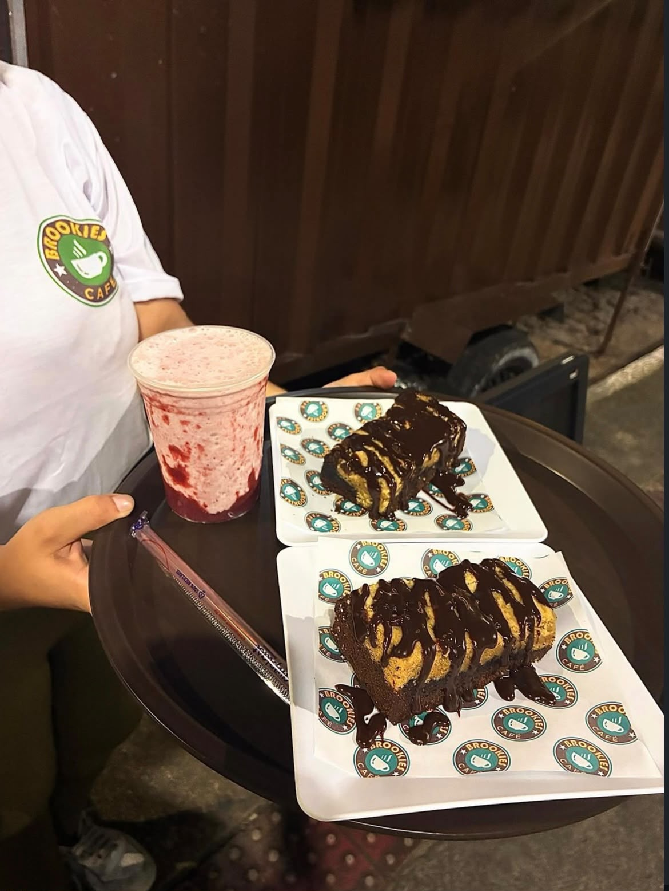
Doce artesanal
Brownie e cookie pra pegar com a mão e aproveitar sem pressa.
-
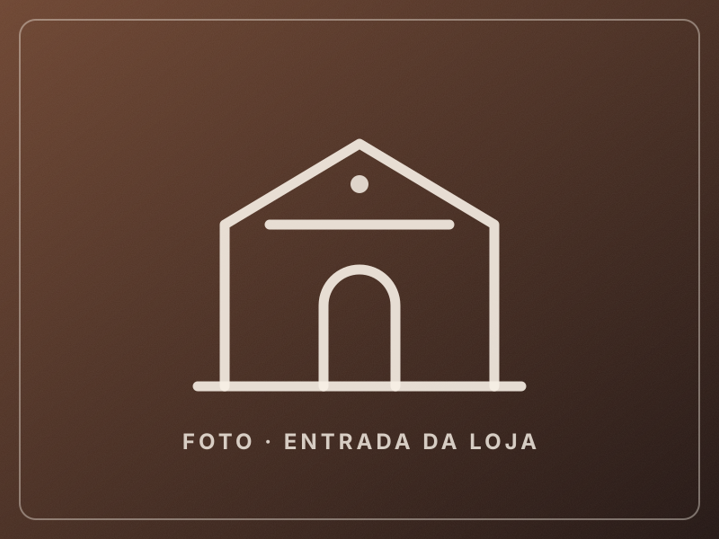
Do lado da praça
Na Gruta de Lourdes, ao lado da Praça Genésio de Carvalho.
Cardápio
Escolha o seu
Brookies, sobremesas, bolos, cafés, smoothies e sodas. Toque em um item para ver os detalhes.
Sobre a Brookies
Um cantinho especial para quem ama um café
A Brookies Café é uma cafeteria de bairro na Gruta de Lourdes, ao lado da Praça Genésio de Carvalho. A proposta é simples: doce fresquinho, café bem tirado e um lugar gostoso pra sentar no fim da tarde.
É ponto de encontro de quem mora por perto, de quem passeia na praça e de quem só quer uma pausa boa antes de seguir o dia.
- 5,0 de avaliação no Google
- Brownies e cookies
- Café coado, espresso e mais
- Gruta de Lourdes, Maceió
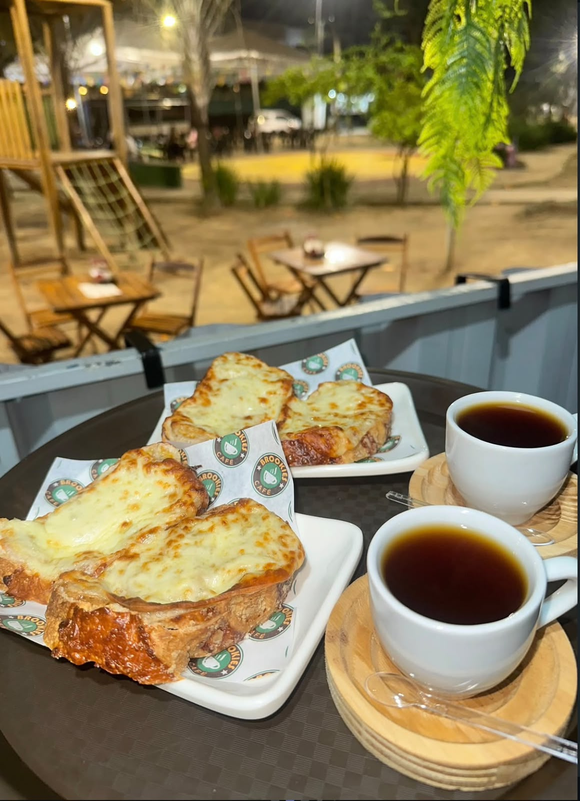
A história
A história da Brookies Café
Aperte o play e conheça um pouco da Brookies Café.
A experiência
Seu café merece uma pausa
Um brownie ainda morno, o cheiro de café passando e aquela cadeira na praça esperando por você.
Ver o cardápio-
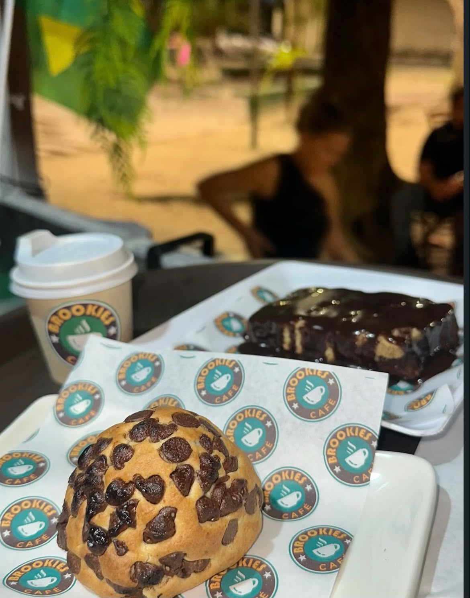
-
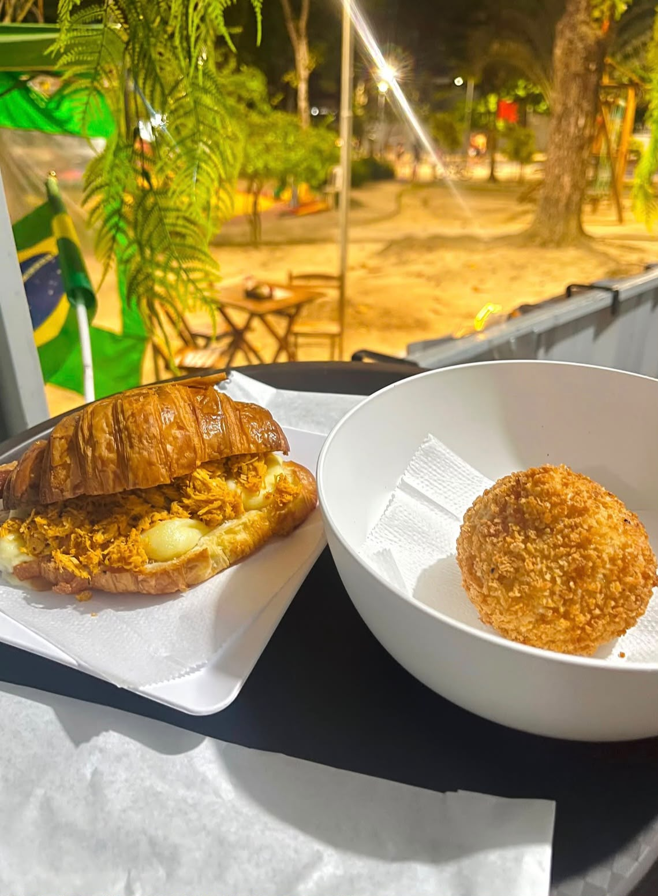
-
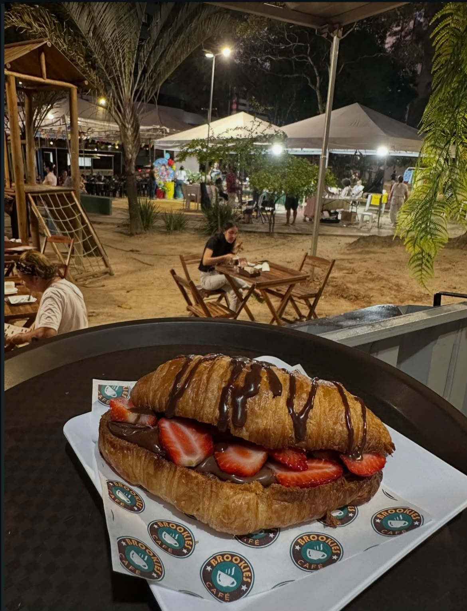
-
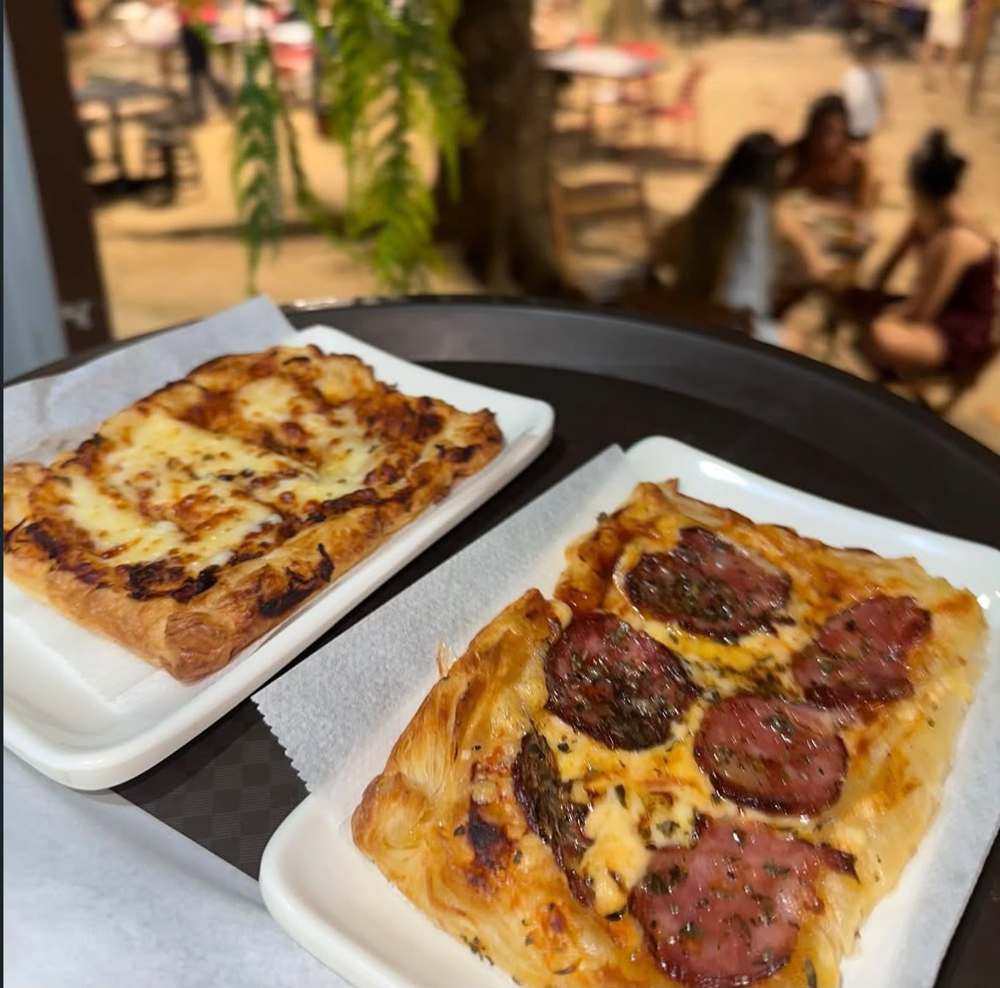
-
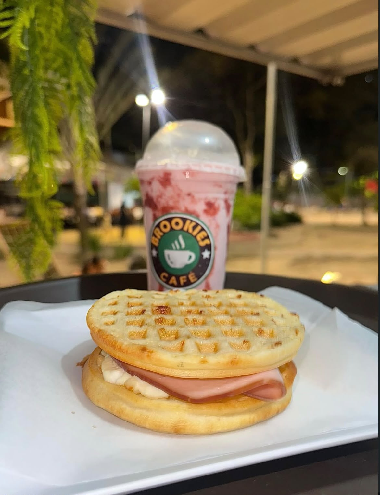
-
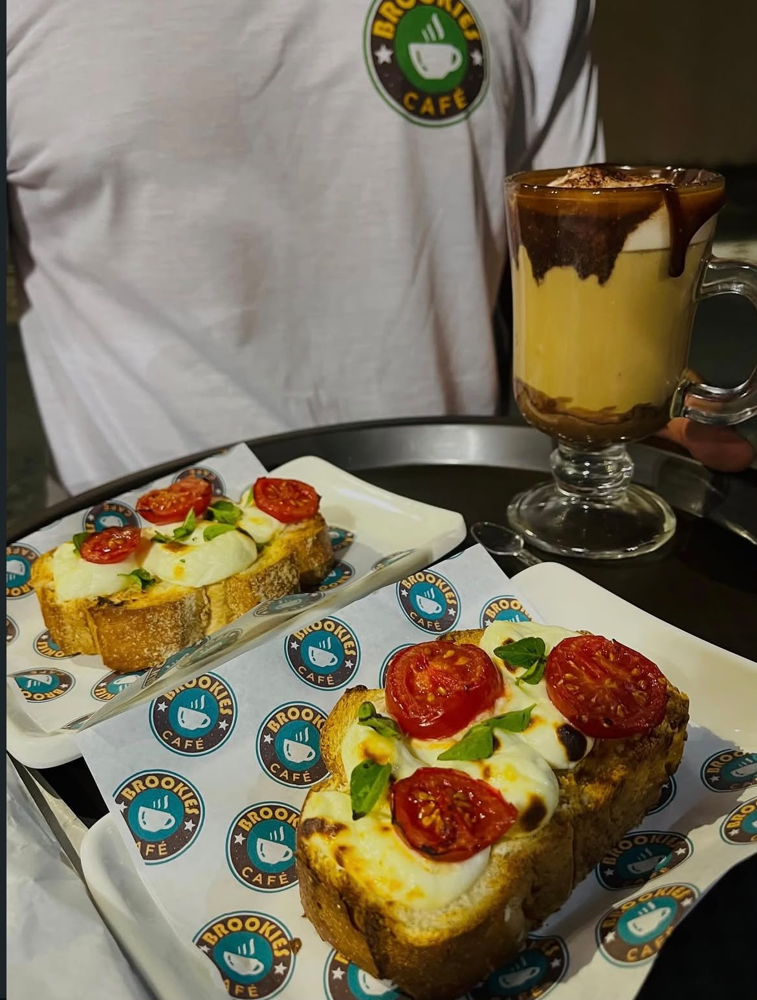
-
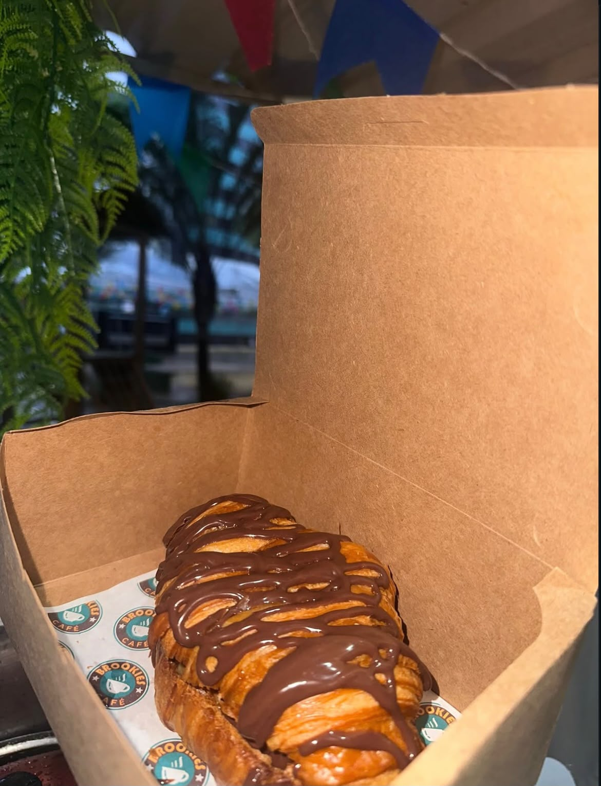
-
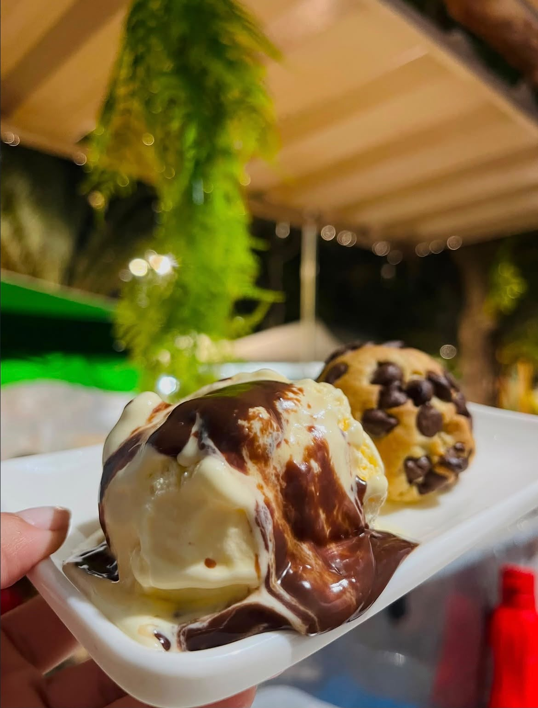
Avaliações
Quem prova, aprova
A nota no Google e quem acompanha a Brookies no Instagram.
No Instagram
2.740seguidores acompanham a Brookies em @brookiescafes — brownie, cookie, café e o dia a dia na praça.
Seguir no InstagramAcompanhe a Brookies
Brownie, cookie, café e momentos deliciosos direto da Gruta de Lourdes.
Onde estamos
Estamos em Gruta de Lourdes
R. Ranildo Cavalcante, 211
Gruta de Lourdes, Maceió – AL
CEP 57052-610
Referência: Praça Genésio de Carvalho
Quando visitar
17h às 22hHorário informado pela Brookies Café. Os dias de funcionamento podem variar — confirme no Instagram antes de ir.
Ver o InstagramBora?
Seu próximo café pode ser aqui
Passe na Brookies Café e descubra seus brownies, cookies e cafés na Gruta de Lourdes.